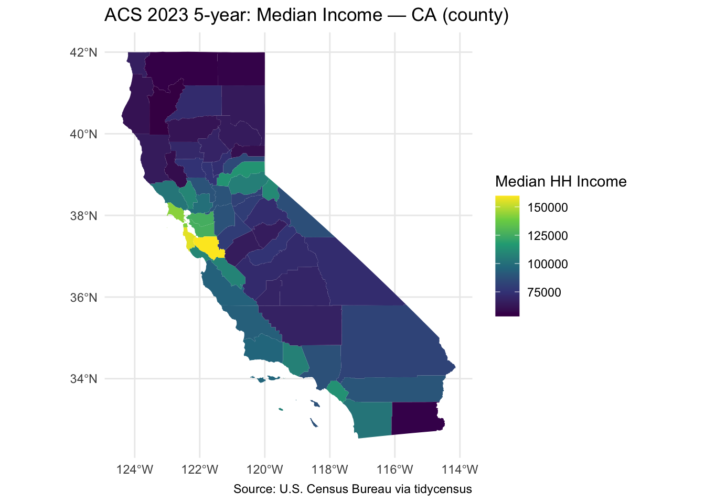

library(tidycensus)
library(tigris)To enable caching of data, set `options(tigris_use_cache = TRUE)`
in your R script or .Rprofile.library(sf)Linking to GEOS 3.11.0, GDAL 3.5.3, PROJ 9.1.0; sf_use_s2() is TRUElibrary(dplyr)
Attaching package: 'dplyr'The following objects are masked from 'package:stats':
filter, lagThe following objects are masked from 'package:base':
intersect, setdiff, setequal, unionlibrary(ggplot2)
library(readr)
options(tigris_use_cache = TRUE)
# 1) API key (uncomment and paste your key)
census_api_key("01924c92db2fdfcac8663b0e459d68c1552447c5", install = FALSE)To install your API key for use in future sessions, run this function with `install = TRUE`.# 2) Explore variables
vars <- load_variables(2023, "acs5", cache = TRUE)
# View a few example codes
vars |> dplyr::filter(grepl("^B19", name)) |> dplyr::slice_head(n = 10)# A tibble: 10 × 4
name label concept geography
<chr> <chr> <chr> <chr>
1 B19001A_001 Estimate!!Total: Household Income … tract
2 B19001A_002 Estimate!!Total:!!Less than $10,000 Household Income … tract
3 B19001A_003 Estimate!!Total:!!$10,000 to $14,999 Household Income … tract
4 B19001A_004 Estimate!!Total:!!$15,000 to $19,999 Household Income … tract
5 B19001A_005 Estimate!!Total:!!$20,000 to $24,999 Household Income … tract
6 B19001A_006 Estimate!!Total:!!$25,000 to $29,999 Household Income … tract
7 B19001A_007 Estimate!!Total:!!$30,000 to $34,999 Household Income … tract
8 B19001A_008 Estimate!!Total:!!$35,000 to $39,999 Household Income … tract
9 B19001A_009 Estimate!!Total:!!$40,000 to $44,999 Household Income … tract
10 B19001A_010 Estimate!!Total:!!$45,000 to $49,999 Household Income … tract # 3) Parameters (EDIT ME)
state_abbr <- "CA"
geo_level <- "county" # options: state, county, tract, block group
my_vars <- c(income = "B19013_001", poverty = "B17001_002")
year_acs <- 2023
survey <- "acs5"
# 4) Download
acs <- get_acs(
geography = geo_level,
variables = my_vars,
state = state_abbr,
year = year_acs,
survey = survey,
geometry = TRUE
)Getting data from the 2019-2023 5-year ACS# 5) Wide format for convenience
acs_wide <- acs |>
tidyr::pivot_wider(
id_cols = c(GEOID, NAME, geometry),
names_from = variable,
values_from = c(estimate, moe)
)
# 6) Map (edit titles/theme)
ggplot(acs_wide) +
geom_sf(aes(fill = estimate_income), color = NA) +
scale_fill_viridis_c(name = "Median HH Income") +
labs(title = paste0("ACS ", year_acs, " 5-year: Median Income — ", state_abbr, " (", geo_level, ")"),
caption = "Source: U.S. Census Bureau via tidycensus") +
theme_minimal()
# 7) Table (top/bottom by poverty count)
top10 <- acs_wide |>
arrange(desc(estimate_poverty)) |>
select(NAME, estimate_poverty, moe_poverty) |>
slice_head(n = 10)
bottom10 <- acs_wide |>
arrange(estimate_poverty) |>
select(NAME, estimate_poverty, moe_poverty) |>
slice_head(n = 10)
top10Simple feature collection with 10 features and 3 fields
Geometry type: MULTIPOLYGON
Dimension: XY
Bounding box: xmin: -122.3423 ymin: 32.53444 xmax: -114.1312 ymax: 38.7364
Geodetic CRS: NAD83
# A tibble: 10 × 4
NAME estimate_poverty moe_poverty geometry
<chr> <dbl> <dbl> <MULTIPOLYGON [°]>
1 Los Angeles County, C… 1322476 15552 (((-118.6044 33.47855, -…
2 San Diego County, Cal… 330602 7963 (((-117.596 33.38779, -1…
3 Orange County, Califo… 296493 8509 (((-118.1146 33.74461, -…
4 San Bernardino County… 291226 9076 (((-117.8025 33.97555, -…
5 Riverside County, Cal… 266955 8729 (((-117.6763 33.88882, -…
6 Sacramento County, Ca… 197472 6775 (((-121.8625 38.06795, -…
7 Fresno County, Califo… 185717 5965 (((-120.9094 36.7477, -1…
8 Kern County, Californ… 168825 6993 (((-120.1944 35.78936, -…
9 Alameda County, Calif… 149752 4801 (((-122.3423 37.80556, -…
10 Santa Clara County, C… 128470 5622 (((-122.2027 37.36305, -…bottom10Simple feature collection with 10 features and 3 fields
Geometry type: MULTIPOLYGON
Dimension: XY
Bounding box: xmin: -124.256 ymin: 35.78669 xmax: -115.648 ymax: 42.00076
Geodetic CRS: NAD83
# A tibble: 10 × 4
NAME estimate_poverty moe_poverty geometry
<chr> <dbl> <dbl> <MULTIPOLYGON [°]>
1 Alpine County, Califo… 209 98 (((-120.0724 38.70277, -…
2 Sierra County, Califo… 325 202 (((-121.0575 39.53999, -…
3 Mono County, Californ… 1441 480 (((-119.6489 38.28912, -…
4 Modoc County, Califor… 1717 357 (((-121.4572 41.94994, -…
5 Inyo County, Californ… 1928 439 (((-118.79 37.39403, -11…
6 Plumas County, Califo… 2075 538 (((-121.497 40.43702, -1…
7 Colusa County, Califo… 2332 598 (((-122.7851 39.38298, -…
8 Mariposa County, Cali… 2347 449 (((-120.3944 37.67504, -…
9 Trinity County, Calif… 2830 755 (((-123.6224 40.9317, -1…
10 Del Norte County, Cal… 2900 589 (((-124.2175 41.95081, -…# 8) Save outputs (optional)
readr::write_csv(st_drop_geometry(acs_wide), "acs_data.csv")